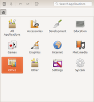
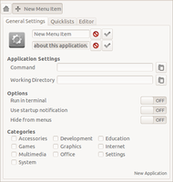
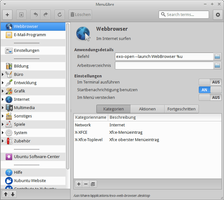

MenuLibre
Dieser Artikel wurde für die folgenden Ubuntu-Versionen getestet:
Ubuntu 14.04 Trusty Tahr
Zum Verständnis dieses Artikels sind folgende Seiten hilfreich:
MenuLibre  ist ein Menüeditor auf GTK-Basis. Er eignet sich daher desktop-übergreifend für die grafischen Oberflächen Unity, GNOME, Xfce und LXDE, um dort Programmstarter bzw. das Anwendungsmenü (nur bei Xfce und LXDE) anzupassen. Wer sich für den Aufbau des Menüs und die zugrunde liegenden Strukturen interessiert, findet weitere Informationen im Artikel Programmstarter.
ist ein Menüeditor auf GTK-Basis. Er eignet sich daher desktop-übergreifend für die grafischen Oberflächen Unity, GNOME, Xfce und LXDE, um dort Programmstarter bzw. das Anwendungsmenü (nur bei Xfce und LXDE) anzupassen. Wer sich für den Aufbau des Menüs und die zugrunde liegenden Strukturen interessiert, findet weitere Informationen im Artikel Programmstarter.
Die Programmoberfläche ist auf Deutsch übersetzt und sollte nach Lektüre dieses Artikels keine unlösbaren Rätsel mehr aufgeben. Erstellt wurde die Anwendung mit Python.
Experten-Info:
Installation¶
 Das Programm ist erst ab Ubuntu 14.04 in den offiziellen Paketquellen enthalten und nur bei Xubuntu vorinstalliert. Daher wird folgendes Paket benötigt [1]:
Das Programm ist erst ab Ubuntu 14.04 in den offiziellen Paketquellen enthalten und nur bei Xubuntu vorinstalliert. Daher wird folgendes Paket benötigt [1]:
menulibre (universe)
 mit apturl
mit apturl
Paketliste zum Kopieren:
sudo apt-get install menulibre
sudo aptitude install menulibre
PPA¶
Zur Installation unter älteren Ubuntu-Versionen kann man entweder das Software-Center (menulibre) oder das "Personal Package Archiv" (PPA) [2] des Entwicklers Sean Michael Davis nutzen.
Adresszeile zum Hinzufügen des PPAs:
ppa:menulibre-dev/devel
Hinweis!
Zusätzliche Fremdquellen können das System gefährden.
Ein PPA unterstützt nicht zwangsläufig alle Ubuntu-Versionen. Weitere Informationen sind der  PPA-Beschreibung des Eigentümers/Teams menulibre-dev zu entnehmen.
PPA-Beschreibung des Eigentümers/Teams menulibre-dev zu entnehmen.
Damit Pakete aus dem PPA genutzt werden können, müssen die Paketquellen neu eingelesen werden.
Nach dem Aktualisieren der Paketquellen erfolgt die Installation wie oben angegeben. Wer auf das Paket gnome-user-guide verzichten kann (weil man beispielsweise kein GNOME verwendet), nutzt folgenden Befehl zur Installation:
sudo apt-get install --no-install-recommends menulibre
Verwendung¶
Um die Anwendung zu starten [3], verwendet man entweder den Menü-Eintrag "System -> Hauptmenü" oder gibt den Programmnamen in die Dash von Unity ein.
|  |
| MenuLibre 1.x nach dem Programmstart |
|  |
| Einen Programmstarter hinzufügen |
|  |
| MenuLibre 2.x unter Xubuntu |
Einen Programmstarter hinzufügen¶
Nicht alle Felder müssen für einen Menü-Eintrag ausgefüllt bzw. aktiviert werden, z.T. sind diese optional:
Symbolauswahl . Rechts daneben sind zwei Eingabefelder zu finden, von denen nur das erste zwingend erforderlich ist:
Name im Menü
Kommentar (optional)
"Application Settings":
"Command" - Befehl zum Programmstart (siehe auch Verzeichnisstruktur)
"Working Directory" - Ordner, der beim Programmstart verwendet werden soll (optional)
"Options":
"Run in terminal" - Programm in einem Terminal ausführen (optional)
"Use startup notification" - Mauszeiger "beschäftigt" anzeigen (optional)
"Hide from menus" - nicht im Menü sichtbar (optional)
"Category" - in welchem Abschnitt des Menüs der Menü-Eintrag später zu finden ist (z.B. "Internet")
Quicklists¶
Nur für Unity relevant. Damit können Einträge in der Launchbar (die Leiste am linken Bildschirmrand) bearbeitet werden. Weitere Details zum Thema sind im Artikel Quicklists zu finden.
Editor¶
Hier kann der Quellcode des erstellten Programmstarters (der Inhalt der .desktop-Datei) betrachtet werden.
Probleme¶
Unter Umständen kann es vorkommen, dass Menulibre nicht mehr startet. Dies liegt an einem bekannten Problem. Um MenuLibre wieder verwenden zu können, muss das Verzeichnis ~/.config/menus umbenannt oder gelöscht werden:
mv ~/.config/menus ~/.config/menus.bak
MenuLibre sollte nun wieder starten und das Verzeichnis neu anlegen.
Links¶
MenuLibre
auf Launchpad
Create and edit quicklists and launchers with MenuLibre
- Blogbeitrag, 08/2012Arronax - Programmstarter mit Nautilus 3.x erstellen
Create Launcher
- Alternative zu MenuLibre, speziell für UnityMenüeditor
 Übersichtsartikel
Übersichtsartikel
- Erstellt mit Inyoka
-
 2004 – 2017 ubuntuusers.de • Einige Rechte vorbehalten
2004 – 2017 ubuntuusers.de • Einige Rechte vorbehalten
Lizenz • Kontakt • Datenschutz • Impressum • Serverstatus -
Serverhousing gespendet von